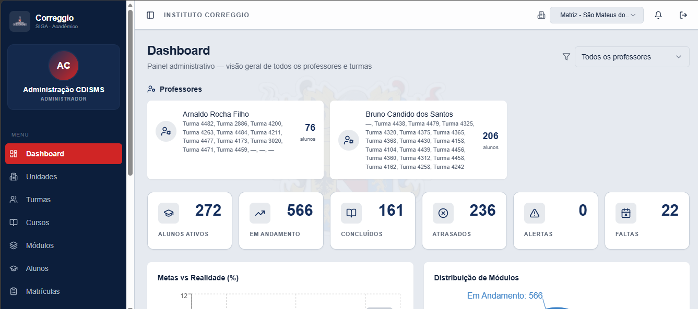
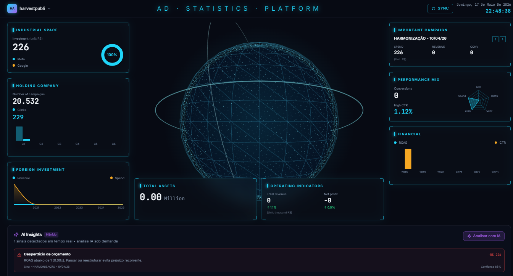

Backend
Python
FastAPI
Flask
REST APIs
PostgreSQL
SQL
Computer Engineering · Backend Development · Automation
Computer Engineering student focused on backend systems, operational software, API integrations, automation workflows, and infrastructure-oriented development.
I'm a Computer Engineering student building backend systems, automation tools, and operational platforms focused on real-world usage and maintainable software design.
My work includes internal management systems, scheduling workflows, API integrations, analytics tooling, and backend services using Python-based technologies.
Currently studying backend architecture, Linux systems, Docker workflows, distributed systems fundamentals, and machine learning engineering.
Featured Project
Academic management platform developed for operational usage including scheduling, student management, administrative workflows, and internal process organization.

Analytics Platform
Analytics platform for advertising data integration, reporting workflows, and operational metrics processing.

Developer Tooling
Command-line automation tool for developer workflows, API integrations, and task execution.
Endpoint development, request validation, response handling, and backend integrations.
Session handling, access control, authentication flows, and protected operations.
Relational schemas, entity relationships, indexing strategies, and structured persistence.
Scheduled tasks, operational tooling, process automation, and workflow organization.
Containerized development environments and consistent local service execution.
Command-line workflows, process management, development tooling, and environment setup.
2025 — Present
Instituto Correggio · Brazil
2024 — 2025
Incepa Roca Brasil · Brazil
Available for internships, engineering collaboration, operational tooling, and backend development projects.